Fact sheetFiche
- DeveloperDéveloppeur
- GameDo Studio
- Based inBasé à
- Cebu, PhilippinesCebu, Philippines
- ReleaseSortie
- Planned for late 2026Prévue fin 2026
- PlatformsPlateformes
- iOS, Android
- PricePrix
- Free (optional rewarded ads)Gratuit (pubs récompensées optionnelles)
- Genre
- Arcade shoot-'em-up, rogueliteShoot'em up arcade, roguelite
- LanguagesLangues
- English, FrenchAnglais, français
- EngineMoteur
- Godot 4
- ControlsContrôles
- Touch (virtual stick + fire), landscapeTactile (stick virtuel + tir), paysage
- Press contactContact presse
- contact@gamedostudio.com
- WebsiteSite
- gamedo-organization.github.io
About the gameLe jeu
Swarm from Hypervoid 88 is a neon arcade shoot-'em-up for mobile. You fly one of six aces of the 47th Wave-Breaker Squadron against enemy swarms that don't just march down the screen: they snake, encircle, sweep, dive and close in like nooses around your ship.
Every kill drops XP. Every level-up freezes the action and offers a draft of powers — chain lightning, piercing rounds, drones, black holes, time-freezing sword strikes — that stack into wildly different builds. Max a power and it evolves into an ultimate; upgrade your ship to Mark 3 and it unlocks its own signature ultimate.
Six sectors stand between you and the heart of Quadrant 88, each ending in a boss fight: the Warlord, the Phantom, the Inferno, the three-phase Queen's Avatar, Venom… and whatever is waiting behind them.
Swarm from Hypervoid 88 est un shoot'em up arcade néon pour mobile. Tu pilotes l'un des six as du 47e Escadron Wave-Breaker face à des essaims qui ne se contentent pas de descendre l'écran : ils serpentent, encerclent, balaient, plongent et se resserrent comme des nœuds coulants autour de ton vaisseau.
Chaque ennemi abattu lâche de l'XP. Chaque montée de niveau fige l'action et propose un choix de pouvoirs — éclairs en chaîne, tirs perforants, drones, trous noirs, frappes de sabre qui figent le temps — qui s'empilent en builds très différents. Monte un pouvoir au maximum et il évolue en ultime ; passe ton vaisseau au Mark 3 et il débloque son propre ultime signature.
Six secteurs te séparent du cœur du Quadrant 88, chacun conclu par un boss : le Warlord, le Phantom, l'Inferno, l'Avatar de la Reine en trois phases, Venom… et ce qui attend derrière eux.
The storyL'histoire
Year 3297. At the heart of Quadrant 88, the Hypervoid Queen — once a radiant celestial being, now corrupted — sleeps in chains and bleeds her nightmares outward: every drone, every sniper, every boss the swarm has ever worn is one of her dreams. From the Yokohama Orbital Docks, the 47th flies short patrols and long sorties into that dream, hunting for a way to reach her. No one who has reached her has come home.
Année 3297. Au cœur du Quadrant 88, la Reine de l'Hypervoid — autrefois un être céleste radieux, aujourd'hui corrompue — dort enchaînée et déverse ses cauchemars dans le vide : chaque drone, chaque sniper, chaque boss de l'essaim est l'un de ses rêves. Depuis les docks orbitaux de Yokohama, le 47e enchaîne patrouilles et sorties dans ce rêve pour l'atteindre. Aucun de ceux qui l'ont atteinte n'est revenu.
Key featuresPoints forts
Living swarmsDes essaims vivants
Squadrons fly real choreography — conga snakes, pincer sweeps, step-down walls, nooses that tighten around you. 15 enemy types, from crystal turrets to homing seed pods.
Les escadrilles suivent de vraies chorégraphies — serpents, tenailles, murs qui descendent, nœuds coulants qui se resserrent. 15 types d'ennemis, des tourelles de cristal aux spores à tête chercheuse.
Build every runUne build par partie
40 powers including 15 ultimates and 5 active abilities. Level up mid-fight, draft a card, and watch your build snowball.
40 pouvoirs dont 15 ultimes et 5 capacités actives. Monte de niveau en plein combat, choisis une carte et regarde ta build s'emballer.
Six pilots, six playstylesSix pilotes, six styles
A pilot who rerolls drafts, one who turns speed into firepower, a glass cannon who crits, a samurai who slows bullets, a veteran who refuses to fall, an android the swarm avoids.
Une pilote qui relance ses cartes, une qui transforme la vitesse en puissance, un canon de verre qui enchaîne les critiques, un samouraï qui ralentit les balles, une vétérane qui refuse de tomber, un androïde que l'essaim évite.
Ships that evolveDes vaisseaux qui évoluent
Six ships, three Marks each. Mark 2 unlocks ultimates; Mark 3 unlocks a signature ultimate — orbiting blades, ghost echoes, a time-freezing iaido strike.
Six vaisseaux, trois Marks chacun. Le Mark 2 débloque les ultimes ; le Mark 3 un ultime signature — lames en orbite, échos fantômes, frappe iaido qui fige le temps.
Six sectors, six bossesSix secteurs, six boss
A campaign across Quadrant 88 with a hand-built boss at the end of every sector, then an endless mode for high scores.
Une campagne à travers le Quadrant 88 avec un boss unique à la fin de chaque secteur, puis un mode sans fin pour les records.
Made for one thumb… or twoPensé pour le tactile
Virtual stick and fire button tuned for phones, short runs, and per-sector leaderboards.
Stick virtuel et bouton de tir pensés pour le téléphone, parties courtes et classements par secteur.
Key artIllustrations


PilotsPilotes
The aces of the 47th Wave-Breaker Squadron, Yokohama Orbital Docks.Les as du 47e Escadron Wave-Breaker, docks orbitaux de Yokohama.
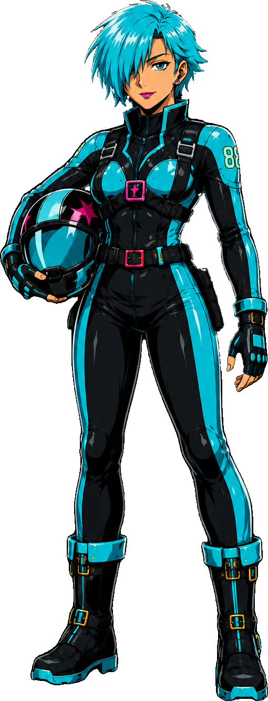
REI · STARLING
The model cadet who never quits.
L’élève modèle qui n’abandonne jamais.
Origin storySon histoire
A drift-colony kid with no connections — just a will nobody has ever bent. First into the simulator at dawn, last out at night, she failed the academy's evasion trial forty-one times and passed the forty-second with the best score ever logged. Top of her class at nineteen, the model cadet every instructor now cites. She gives everything, every sortie. She has never once quit.
Une gamine des colonies dérivantes, sans relations — seulement une volonté que personne n'a jamais su plier. Première au simulateur à l'aube, dernière à en sortir le soir, elle a raté quarante et une fois l'épreuve d'évasion de l'académie avant de la réussir à la quarante-deuxième avec le meilleur score jamais enregistré. Major de sa promotion à dix-neuf ans, l'élève modèle que tous les instructeurs citent. Elle donne tout, à chaque sortie. Elle n'a jamais abandonné.
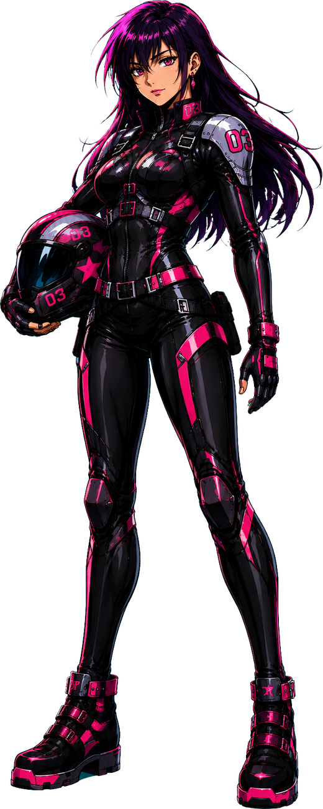
JUN · STARLING-TWO
The prodigy who never had to try.
La prodige qui n’a jamais eu à forcer.
Origin storySon histoire
The prodigy. Born into a family of test pilots on the Yokohama docks, she flew cargo shuttles at nine and outflew her instructors at twelve. At eighteen she tested at a 98.6% neural sync and tamed the prototype Void-Runner on her first try — then pulled its governor off. Everything comes easily to Jun. Rei, who earned every hour Jun got for free, calls her imouto and keeps her alive.
L'enfant prodige. Née dans une famille de pilotes d'essai sur les docks de Yokohama, elle pilotait des navettes cargo à neuf ans et surpassait ses instructeurs à douze. À dix-huit ans, elle affiche une synchronisation neurale de 98,6 % et dompte le prototype Void-Runner du premier coup — avant d'en retirer le bridage. Tout est facile pour Jun. Rei, qui a gagné chaque heure que Jun a eue gratuitement, l'appelle imouto et la garde en vie.
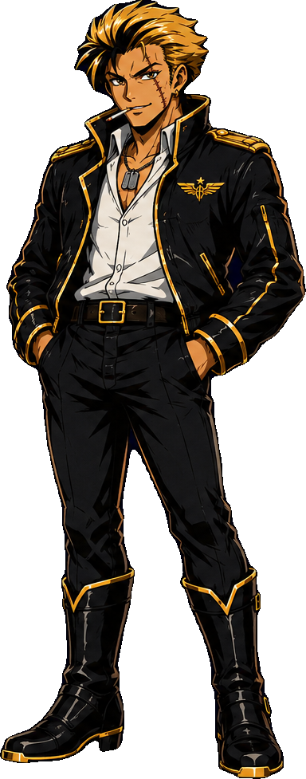
VEGA · GOLD-FANG
Says he’s in it for the money. Nobody believes him.
Dit qu’il est là pour l’argent. Personne ne le croit.
Origin storySon histoire
He flew the first strike into the void as Kaida's wingman — they were the only two who came home. She stayed; he walked out and became the fastest smuggler on the freeport lanes. Now he flies beside the 47th "for the money", paid per kill, in advance. Nobody believes him: his invoices go unpaid, his fees end up in colony orphanages, and he always shows up exactly when Rei needs him. He salutes no one but Kaida.
Il a volé lors de la première frappe dans le vide comme ailier de Kaida — ils sont les deux seuls à en être revenus. Elle est restée ; lui est parti devenir le contrebandier le plus rapide des ports francs. Aujourd'hui, il vole aux côtés du 47e « pour l'argent », payé à la cible, d'avance. Personne ne le croit : ses factures restent impayées, ses gains finissent dans les orphelinats des colonies, et il arrive toujours pile quand Rei a besoin de lui. Il ne salue personne, sauf Kaida.
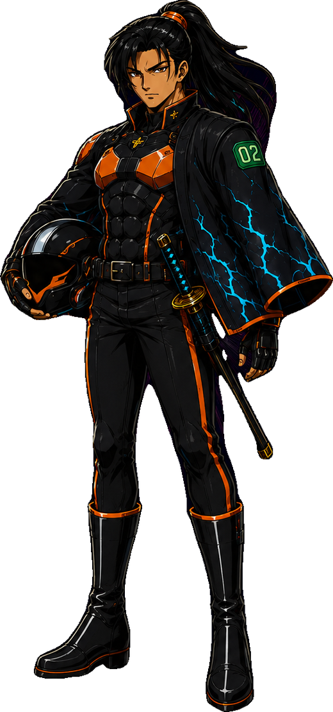
HAYATO · KESTREL
One breath, one cut, one bullet.
Un souffle, une coupe, une balle.
Origin storySon histoire
Last son of a Kyoto kenjutsu bloodline, he says the blade and the cockpit are the same discipline: one breath, one cut, one bullet. Three hundred sorties and he has never lost a wingmate — a blessing to the squad, a debt unpaid to him. He bows to his ship before every launch.
Dernier fils d'une lignée de kenjutsu de Kyoto, il dit que le sabre et le cockpit sont une seule discipline : un souffle, une coupe, une balle. Trois cents sorties sans jamais perdre un ailier — une bénédiction pour l'escadron, une dette impayée pour lui. Il salue son vaisseau avant chaque décollage.
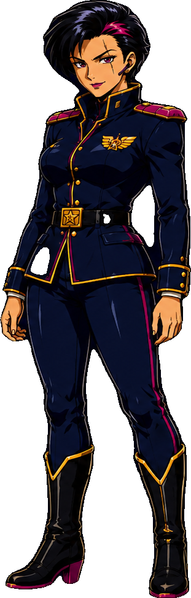
KAIDA · IRON ORCHID
Every ace of the 47th would follow her into the void.
Chaque as du 47e la suivrait dans le vide.
Origin storySon histoire
Flew the first strike into the void at twenty-three and came home with a scar above her eye and a squadron of empty cockpits. When they tried to ground her, she became the one who sends others. She knows every pilot's name — and the way every pilot dies. Nobody questions her: pilots straighten up when she enters the hangar, Command has learned her "no" is final, and every ace of the 47th would follow her into the void.
A volé lors de la première frappe dans le vide à vingt-trois ans et en est revenue avec une cicatrice au-dessus de l'œil et un escadron de cockpits vides. Quand on a voulu la clouer au sol, elle est devenue celle qui envoie les autres. Elle connaît le nom de chaque pilote — et la façon dont chacun meurt. Personne ne la conteste : les pilotes se redressent quand elle entre dans le hangar, le commandement a appris que son « non » est définitif, et chaque as du 47e la suivrait dans le vide.
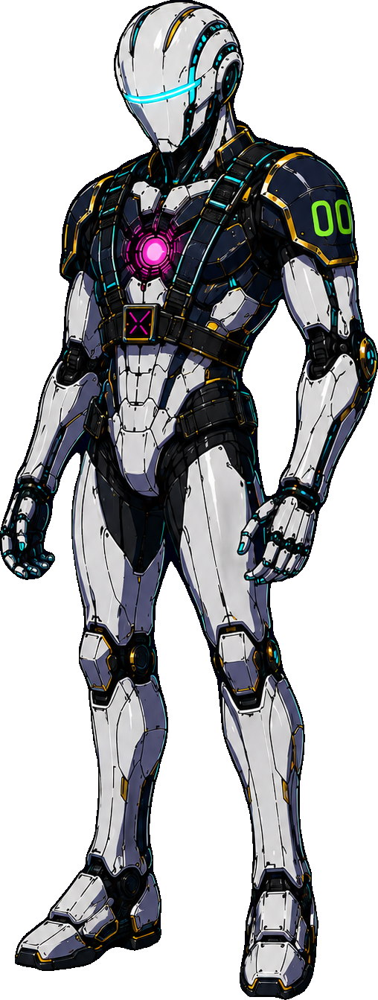
NULL
The swarm parts around him.
L’essaim s’écarte devant lui.
Origin storySon histoire
Pulled from the wreck of a Phantom-tier boss and rebuilt by the squadron's engineer. He says he remembers being many. The swarm has never fired at him directly — it parts around him like water around a stone, and the longer the 47th flies with him, the less anyone wants to ask why.
Extrait de l'épave d'un boss de classe Phantom et reconstruit par l'ingénieur de l'escadron. Il dit se souvenir d'avoir été plusieurs. L'essaim ne lui a jamais tiré dessus directement — il s'écarte autour de lui comme l'eau autour d'une pierre, et plus le 47e vole avec lui, moins on a envie de demander pourquoi.
Ships (Mark 3)Vaisseaux (Mark 3)
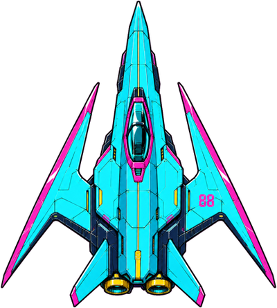
STRIKER
The all-rounder.
Le polyvalent.
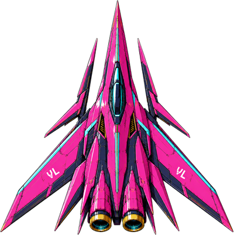
VORTEX
Pure speed and fire rate.
Vitesse et cadence pures.
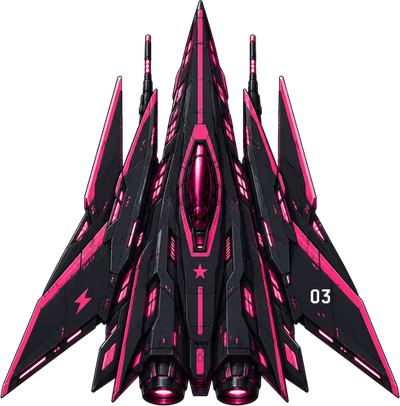
VOID-RUNNER
Fast, fragile, devastating.
Rapide, fragile, dévastateur.
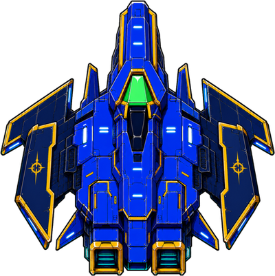
AEGIS
A flying bunker of shields.
Un bunker volant à boucliers.
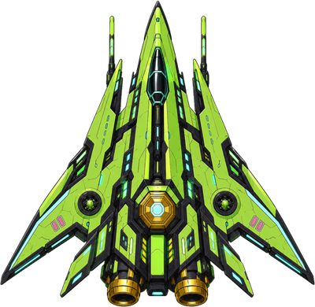
HIVE
A carrier with a drone army.
Un porte-drones.
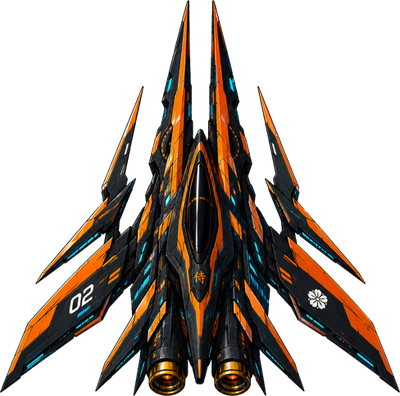
KESTREL
Charged katana slashes.
Tirs chargés en coups de katana.
BossesBoss
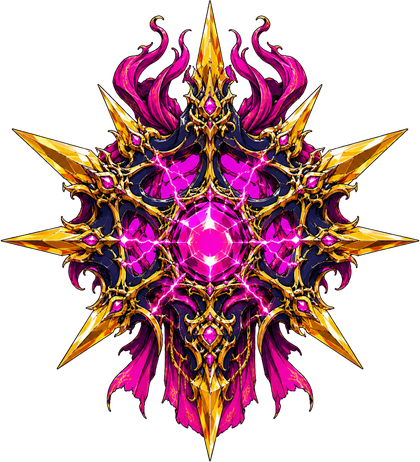
WARLORD
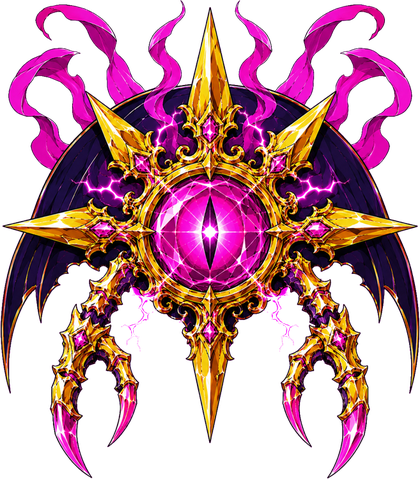
PHANTOM
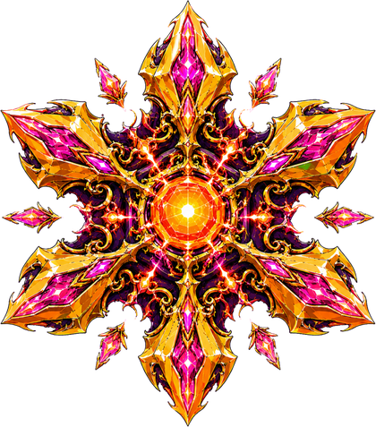
INFERNO
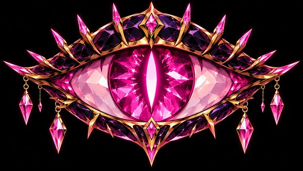
QUEEN'S AVATARAVATAR DE LA REINE
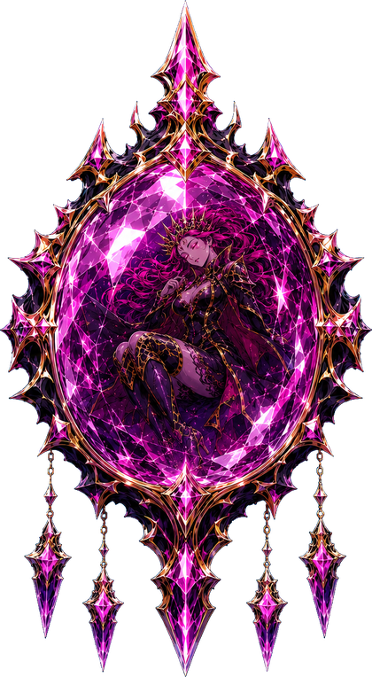
THE CRYSTALLE CRISTAL
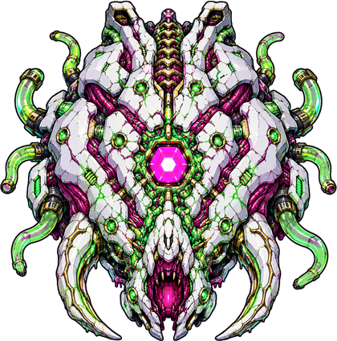
VENOM
The swarmL'essaim
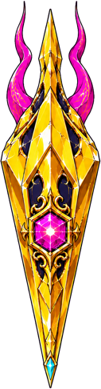
SCOUT
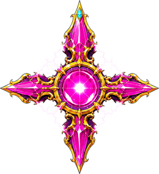
SNIPER
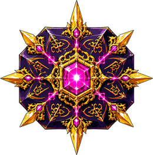
TANK
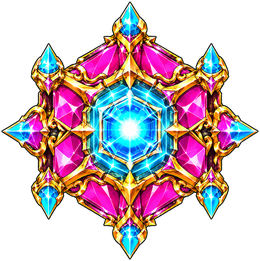
WARDEN
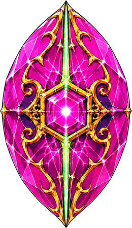
SPLITTER
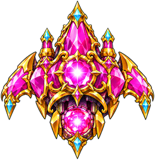
BOMBER
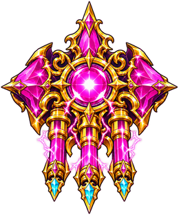
SALVO
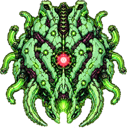
CORRUPTOR
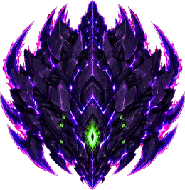
DREAD HULK
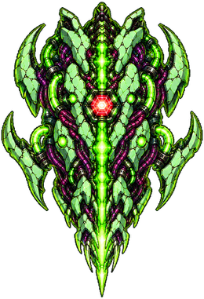
LANCER
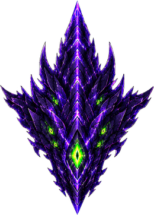
WEAVER
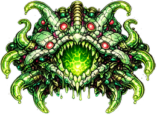
SPITTER
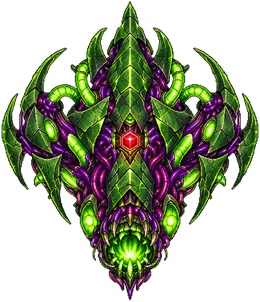
SEEKER
Logos & iconsLogos et icônes


Full-resolution logos, key art, pilots, ships and bosses are in the Les logos, illustrations, pilotes, vaisseaux et boss en haute résolution sont dans le .zip.
Get the gameTélécharger le jeu
Coming to Google Play and the App Store in late 2026.Disponible sur Google Play et l'App Store fin 2026.
Contact
Press & creators:Presse et créateurs : contact@gamedostudio.com
GameDo Studio · Cebu, Philippines
Review keys / promo codes available on request. Codes promo disponibles sur demande pour la presse et les créateurs.